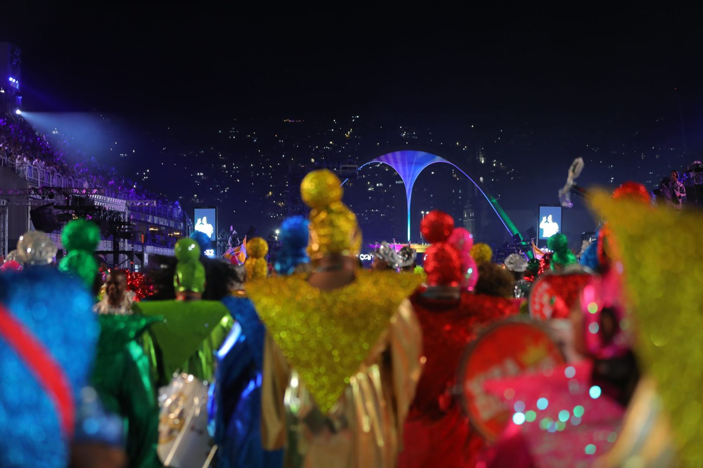

Festivals · Culture
Rio Carnival 2027 (Sambódromo parades)
- Dates
- –
- Venue
- Sambódromo da Marquês de Sapucaí
- Location
- Rio de Janeiro, Brazil
- Format
- In-person
- Category
- Culture
- Industry
- Culture / Carnival
- Organiser
- LIESA and LIGA RJ with Riotur
- Official website
- https://riotur.rio/editorial/carnaval-2027-confira-os-sambas-enredo-das-escolas-do-grupo-especial/
About
Série Ouro parades 5-6 Feb, Grupo Especial 7-9 Feb 2027. Street carnival (blocos) runs city-wide around the same dates. Brazil dates are local (Brasília time, UTC-3, unless the venue is in another Brazilian time zone, e.g. Manaus UTC-4).
Topics: carnival, samba, samba schools, parades.
No organiser attendance figure found on the official pages checked (23-24 Nov 2026). Ranked by an estimated size tier 'mega' (about 1,000,000+ attendees; our judgement from format, venue and scale, not an official number).